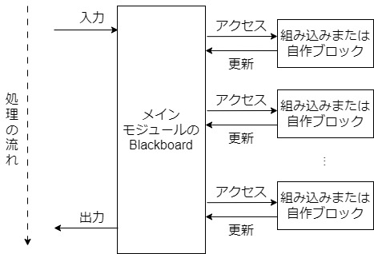

DialBB: 対話システム構築フレームワーク
News
概要
DialBBは，株式会社C4A研究所が開発した対話システムを構築するためのフレームワークです．情報技術の教材として作られました．拡張可能性の高いアーキテクチャを持ち，読みやすいコードで書かれています．ブロックと呼ぶモジュールを組み合わせてシステムを開発できます．開発者は簡単なシステムを組み込みブロックを用いて作ることができ，高度なシステムを自作のブロックを使って作ることもできます．
DialBBのメインモジュールは，メソッド呼び出しまたはWeb API経由で，ユーザ発話の入力をJSON形式で受けとり，システム発話をJSON形式で返します．メインモジュールは，ブロックを順に呼び出すことによって動作します．各ブロックはJSON形式(pythonのdictのデータ)を受け取り，JSON形式のデータを返します．各ブロックのクラスや入出力仕様はアプリケーション毎のコンフィギュレーションファイルで規定します．

インストール
DialBBのGitHubサイトの日本語READMEを参照してください．
ドキュメント
詳細な仕様は最新版ドキュメントを参照してください．
古いバージョンのドキュメントもあります．
チュートリアルスライド
DialBBのチュートリアルで用いるスライドがここにあります
ノーコードツール
DialBBにはノーコードで対話システムを構築するためのツールが付属しています．詳しくはノーコードツールのページを御覧ください．
論文および引用
DialBBを利用した研究を学会発表する際は以下の論文の引用をお願いします．
Mikio Nakano and Kazunori Komatani. DialBB: A Dialogue System Development Framework as an Educational Material. In Proceedings of the 25th Annual Meeting of the Special Interest Group on Discourse and Dialogue (SIGDIAL-24), pages 664–668, Kyoto, Japan. Association for Computational Linguistics, 2024
ライセンス
DialBBはApache License 2.0の下で公開されています．（ノーコードツールの一部はMIT Licenseの下で公開されています．）
問い合わせ先
問題点を発見されたり、質問があったりした場合は，dialbb at c4a.jpまでご連絡ください．
著作権
(c) 株式会社C4A研究所